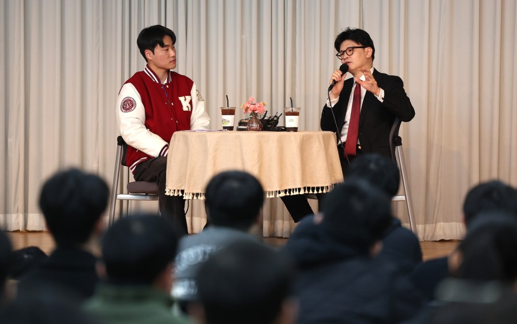
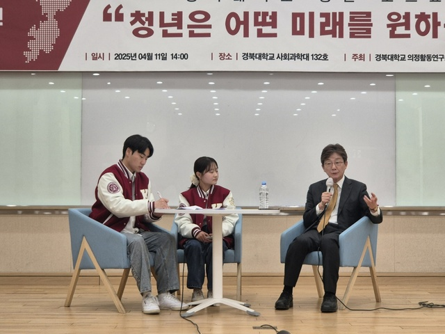
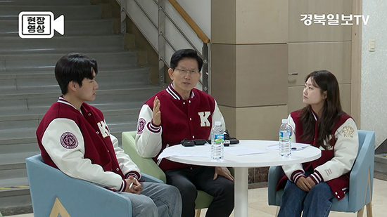
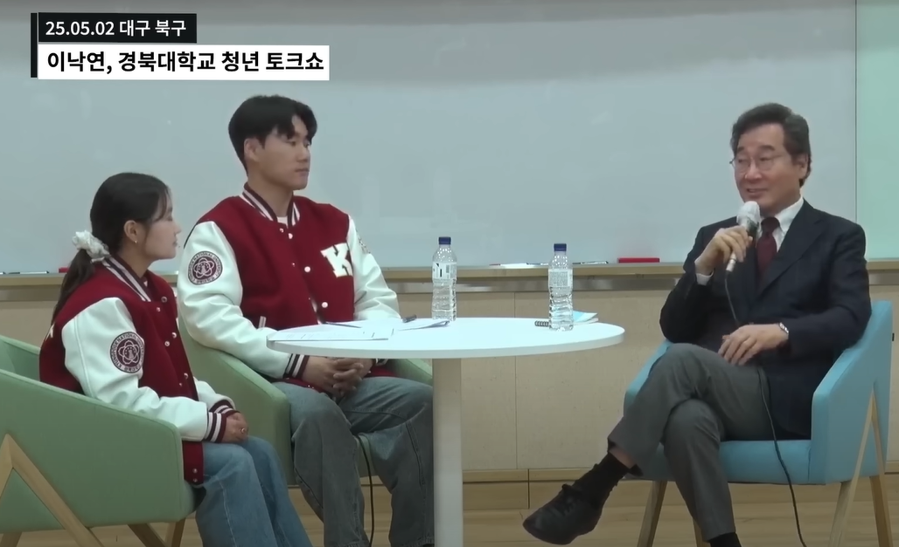
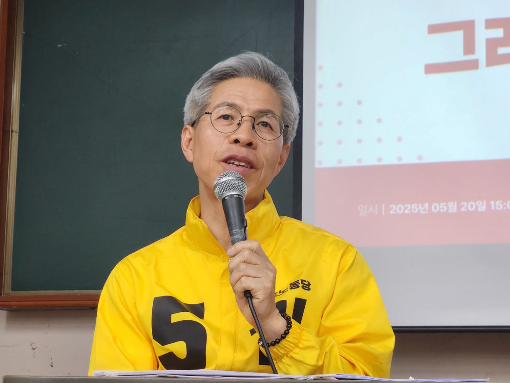

경북대학교 청년 토크쇼

“시대 앞에 비겁해지지 말자.” 경북대학교 청년 토크쇼는 지방 대학생 정치 참여를 증진하고 청년 세대의 정치적 무관심을 해소하기 위해 진행된 프로젝트입니다.
제21대 대통령선거를 맞이하여 한동훈 후보, 유승민 후보, 김문수 후보, 이낙연 후보, 권영국 후보를 초청하였고, ‘청년 참여, 지방 소멸 해소’라는 주제로 토크쇼를 진행했습니다.
정치 발전의 숙명을 가진 청년 정치학도로서 지방과 청년의 미래를 함께 모색하는 의미 있는 시간이었습니다.




